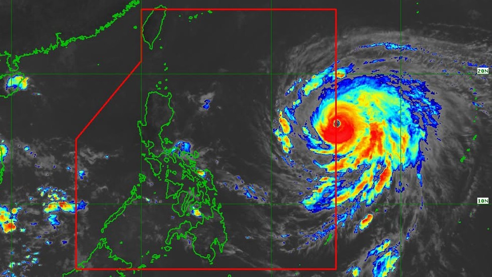

DA eyes a temporary stop on pork import clearances to prop up hog farmers
20 Oct 2026
Context.ph: speaking at the Tuesday Club forum in Mandaluyong, Agriculture Secretary Francisco Tiu Laurel Jr. said a safeguard duty on imported pork is under study, but imports have risen only about 6 to 7% year on year, short of the 25% trigger. So the DA is looking at pausing Sanitary and Phytosanitary Import Clearances for selected pork products, namely kasim, liempo, pigue, jowls and whole pigs. It could start as early as November and last 30 to 60 days, and would only cover shipments not yet paid for or not yet arrived. The DA is waiting on legal advice. It also backs the industry’s proposed ₱210/kg floor for live hogs, but says no law lets it enforce one; some raisers are getting only ₱120 to ₱160/kg. Retail in Metro Manila on Oct 20: ham ₱300, belly ₱370, frozen kasim ₱240, frozen liempo ₱300 per kilo.
Operator read: low hog prices have been the one bit of relief on the cost line, and this is the government signaling it wants them higher. A short pause hits the frozen imported cuts that sit under a lot of sisig, adobo and grill menus, and it would land right as Christmas orders build. Ask your meat supplier for their landed and paid-for stock through December, get a fresh local kasim and liempo quote alongside the frozen one, and don’t reprice the menu until the DA actually signs the order. Flag: proposal only, no order issued.
Open Context.ph · DA Bantay Presyo

Super Typhoon Rosal bends north and stays east of Luzon
20 Oct 2026
PAGASA’s 5 pm agriculture warning put Rosal (Champi) 1,270 km east of Central Luzon with 195 km/h winds and gusts to 240 km/h, moving west-northwest at 25 km/h. The forecast track turns it northwest from today, passing closest to extreme northern Luzon on Thursday and Friday, about 425 km east of Basco, Batanes, before it leaves PAR Friday night or early Saturday. It’s expected to stay a super typhoon and may strengthen over the Philippine Sea before weakening Thursday night. GMA’s 4 pm report says its trough brings scattered rain to Bicol and Eastern Visayas today, with rough seas off northern and eastern Luzon and eastern Visayas. Metro Manila gets only isolated thunderstorms.
Operator read: on this track the highland vegetable belt is largely spared, so a big buy-ahead isn’t needed. The real exposure is fishing: rough eastern seas for three or four days can thin Bicol and Visayas catch into Manila markets. If fish is on special this week, check your supplier’s volume before you print it. PAGASA notes the track can still shift inside the cone, so read Friday’s bulletin.
PAGASA agri warning · Open GMA News
Watami rolls out 11 teishoku sets with refill upgrades
20 Oct 2026
Interaksyon: Watami, under The Bistro Group (Italianni’s, Texas Roadhouse, TGI Fridays, Siklab+), launched “Everyday All Yours,” 11 Japanese set meals across chicken, pork, beef and shrimp. Each comes with rice, salad, miso soup, dessert and sides, and diners can upgrade to unlimited iced tea, rice and miso soup. The story doesn’t give prices. Flag: promo coverage.
Operator read: this is a casual-dining group packaging its menu to look like value without cutting prices, the same move the QSRs are making at ₱89 and ₱99. The refill upgrade is the clever bit, since rice, miso and iced tea cost little and lift the check. If you’re building a set-meal format, start with one protein per set, fixed sides, and a refill add-on priced at a high margin.
Open Interaksyon